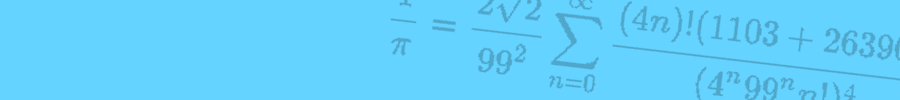

数学オリンピック
Mathematical Olympiad
ホーム数学オリンピックホーム数学オリンピックの大会一覧国際数学オリンピック過去大会・過去問
国際数学オリンピック過去大会・過去問
2023年12月15日
注1：国際数学オリンピックの過去大会の情報は以下ページにまとめられています。
国際数学オリンピック概要
https://www.imojp.org/overseas/imo_statistics.html
注2：以下に掲載する問題のうち、「Shortlist」は数MBと重めなので注意してください。
以下をクリックで選択した年の大会に移動します。
第64回大会 / IMO2023
開催地：日本 千葉
公式サイト
第64回国際数学オリンピック
https://imo2023.jp/ja/
過去問
第64回国際数学オリンピック 問題
https://www.imojp.org/archive/mo2023/imo2023/problems/2023.pdf
第63回大会 / IMO2022
開催地：ノルウェー オスロ
公式サイト
第63回国際数学オリンピック
https://www.imo2022.org/
過去問
第63回国際数学オリンピック 問題
https://www.imojp.org/archive/mo2022/imo2022/problems/2022.pdf
第63回国際数学オリンピック Shortlist
https://www.imo-official.org/problems/IMO2022SL.pdf
第62回大会 / IMO2021
開催地：ロシア サンクトペテルブルク(オンライン開催)
公式サイト
謎のサイトに飛ばされるため掲載していない。
過去問
第62回国際数学オリンピック 問題
https://www.imojp.org/archive/mo2021/imo2021/problems/2021.pdf
第62回国際数学オリンピック Shortlist
https://www.imo-official.org/problems/IMO2021SL.pdf
第61回大会 / IMO2020
開催地：ロシア サンクトペテルブルク(オンライン開催)
公式サイト
第61回国際数学オリンピック
https://imo2020.ru/
過去問
第61回国際数学オリンピック 問題
https://www.imojp.org/archive/mo2020/imo2020/problems/2020.pdf
第61回国際数学オリンピック Shortlist
https://www.imo-official.org/problems/IMO2020SL.pdf
第60回大会 / IMO2019
開催地：イギリス バース
公式サイト
第60回国際数学オリンピック
https://www.imo2019.uk/
過去問
第60回国際数学オリンピック 問題
https://www.imojp.org/archive/mo2019/imo2019/problems/2019.pdf
第60回国際数学オリンピック Shortlist
https://www.imo-official.org/problems/IMO2019SL.pdf
第59回大会 / IMO2018
開催地：ルーマニア クルジュ=ナポカ
公式サイト
謎のブログに飛ばされるため掲載していない。
過去問
第59回国際数学オリンピック 問題
https://www.imojp.org/archive/mo2018/imo2018/problems/2018.pdf
第59回国際数学オリンピック Shortlist
https://www.imo-official.org/problems/IMO2018SL.pdf
第58回大会 / IMO2017
開催地：ブラジル リオデジャネイロ
公式サイト
第58回国際数学オリンピック
https://impa.br/acervo/imo2017/
過去問
第58回国際数学オリンピック 問題
https://www.imojp.org/archive/mo2017/imo2017/problems/2017.pdf
第58回国際数学オリンピック Shortlist
https://www.imo-official.org/problems/IMO2017SL.pdf
第57回大会 / IMO2016
開催地：香港
公式サイト
IMO公式にサイト情報なし
過去問
第57回国際数学オリンピック 問題
https://www.imojp.org/archive/mo2016/imo2016/problems/2016.pdf
第57回国際数学オリンピック Shortlist
https://www.imo-official.org/problems/IMO2016SL.pdf
第56回大会 / IMO2015
開催地：タイ チェンマイ
公式サイト
既にサイトが消滅している。
過去問
第56回国際数学オリンピック 問題
https://www.imojp.org/archive/mo2015/imo2015/problems/2015.pdf
第56回国際数学オリンピック Shortlist
https://www.imo-official.org/problems/IMO2015SL.pdf
第55回大会 / IMO2014
開催地：南アフリカ共和国 ケープタウン
公式サイト
IMO公式にサイト情報なし
過去問
第55回国際数学オリンピック 問題
https://www.imojp.org/archive/mo2014/imo2014/problems/2014.pdf
第55回国際数学オリンピック Shortlist
https://www.imo-official.org/problems/IMO2014SL.pdf
第54回大会 / IMO2013
開催地：コロンビア サンタマルタ
公式サイト
IMO公式にサイト情報なし
過去問
第54回国際数学オリンピック 問題
https://www.imojp.org/archive/mo2013/imo2013/problems/2013.pdf
第54回国際数学オリンピック Shortlist
https://www.imo-official.org/problems/IMO2013SL.pdf
第53回大会 / IMO2012
開催地：アルゼンチン マル・デル・プラタ
公式サイト
何故か開かないので掲載していない。
過去問
第53回国際数学オリンピック 問題
https://www.imojp.org/archive/mo2012/imo2012/problems/2012.pdf
第53回国際数学オリンピック Shortlist
https://www.imo-official.org/problems/IMO2012SL.pdf
第52回大会 / IMO2011
開催地：オランダ アムステルダム
公式サイト
IMO公式にサイト情報なし
過去問
第52回国際数学オリンピック 問題
https://www.imojp.org/archive/mo2011/imo2011/problems/2011.pdf
第52回国際数学オリンピック Shortlist
https://www.imo-official.org/problems/IMO2011SL.pdf
第51回大会 / IMO2010
開催地：カザフスタン アスタナ
公式サイト
IMO公式にサイト情報なし
過去問
第51回国際数学オリンピック 問題
https://www.imojp.org/archive/mo2010/imo2010/problems/2010.pdf
第51回国際数学オリンピック Shortlist
https://www.imo-official.org/problems/IMO2010SL.pdf
第50回大会 / IMO2009
開催地：ドイツ ブレーメン
公式サイト
IMO公式にサイト情報なし
過去問
第50回国際数学オリンピック 問題
https://www.imojp.org/archive/mo2009/imo2009/problems/2009.pdf
第50回国際数学オリンピック Shortlist
https://www.imo-official.org/problems/IMO2009SL.pdf
第49回大会 / IMO2008
開催地：スペイン マドリード
公式サイト
IMO公式にサイト情報なし
過去問
第49回国際数学オリンピック 問題
https://www.imojp.org/archive/mo2008/imo2008/problems/2008.pdf
第49回国際数学オリンピック Shortlist
https://www.imo-official.org/problems/IMO2008SL.pdf
第48回大会 / IMO2007
開催地：ベトナム ハノイ
公式サイト
IMO公式にサイト情報なし
過去問
第48回国際数学オリンピック 問題
https://www.imojp.org/archive/mo2007/imo2007/problems/imo48.html
第48回国際数学オリンピック Shortlist
https://www.imo-official.org/problems/IMO2007SL.pdf
第47回大会 / IMO2006
開催地：スロベニア リュブリャナ
公式サイト
第47回国際数学オリンピック
http://imo2006.dmfa.si/
過去問
第47回国際数学オリンピック 問題
https://www.imojp.org/archive/mo2006/imo2006/problems/2006.pdf
第47回国際数学オリンピック Shortlist
https://www.imo-official.org/problems/IMO2006SL.pdf
第46回大会 / IMO2005
開催地：メキシコ メリダ
公式サイト
IMO公式にサイト情報なし
過去問
第46回国際数学オリンピック 問題
https://www.imojp.org/archive/mo2005/imo2005/problems/imo46.html
第45回大会 / IMO2004
開催地：ギリシャ アテネ
公式サイト
IMO公式にサイト情報なし
過去問
第45回国際数学オリンピック 問題
https://www.imojp.org/archive/mo2006/imo2006/problems/imo47.html
第44回大会 / IMO2003
開催地：日本 東京
公式サイト
IMO公式にサイト情報なし
過去問
第44回国際数学オリンピック 問題
https://www.imojp.org/archive/mo2003/imo2003/problems/imo44.html
第43回大会 / IMO2002
開催地：イギリス グラスゴー
公式サイト
IMO公式にサイト情報なし
過去問
第43回国際数学オリンピック 問題
https://www.imojp.org/archive/mo2002/imo2002/problems/imo43.html
第42回大会 / IMO2001
開催地：アメリカ ワシントン
公式サイト
IMO公式にサイト情報なし
過去問
第42回国際数学オリンピック 問題
https://www.imojp.org/archive/mo2001/imo2001/problems/imo42.html
第41回大会 / IMO2000
開催地：韓国 テジョン広域市
公式サイト
IMO公式にサイト情報なし
過去問
第41回国際数学オリンピック 問題
https://www.imojp.org/archive/mo2000/imo2000/problems/imo41.html
第40回大会 / IMO1999
開催地：ルーマニア ブカレスト
公式サイト
IMO公式にサイト情報なし
過去問
第40回国際数学オリンピック 問題
https://firmianai7z9.github.io/USSAO/contests/math/problems/1999_eng.pdf
第39回大会 / IMO1998
開催地：台湾 台北
公式サイト
IMO公式にサイト情報なし
過去問
第39回国際数学オリンピック 問題
https://firmianai7z9.github.io/USSAO/contests/math/problems/1998_eng.pdf
第38回大会 / IMO1997
開催地：アルゼンチン マル・デル・プラタ
公式サイト
IMO公式にサイト情報なし
過去問
第38回国際数学オリンピック 問題
https://firmianai7z9.github.io/USSAO/contests/math/problems/1997_eng.pdf
第37回大会 / IMO1996
開催地：インド ムンバイ
公式サイト
IMO公式にサイト情報なし
過去問
第37回国際数学オリンピック 問題
https://firmianai7z9.github.io/USSAO/contests/math/problems/1996_eng.pdf
第36回大会 / IMO1995
開催地：カナダ トロント
公式サイト
IMO公式にサイト情報なし
過去問
第36回国際数学オリンピック 問題
https://firmianai7z9.github.io/USSAO/contests/math/problems/1995_eng.pdf
第35回大会 / IMO1994
開催地：香港
公式サイト
IMO公式にサイト情報なし
過去問
第35回国際数学オリンピック 問題
https://firmianai7z9.github.io/USSAO/contests/math/problems/1994_eng.pdf
第34回大会 / IMO1993
開催地：トルコ イスタンブル
公式サイト
IMO公式にサイト情報なし
過去問
第34回国際数学オリンピック 問題
https://firmianai7z9.github.io/USSAO/contests/math/problems/1993_eng.pdf
第33回大会 / IMO1992
開催地：ロシア モスクワ
公式サイト
IMO公式にサイト情報なし
過去問
第33回国際数学オリンピック 問題
https://firmianai7z9.github.io/USSAO/contests/math/problems/1992_eng.pdf
第32回大会 / IMO1991
開催地：スウェーデン シグトゥーナ
公式サイト
IMO公式にサイト情報なし
過去問
第32回国際数学オリンピック 問題
https://firmianai7z9.github.io/USSAO/contests/math/problems/1991_eng.pdf
第31回大会 / IMO1990
開催地：中国 北京
公式サイト
IMO公式にサイト情報なし
過去問
第31回国際数学オリンピック 問題
https://firmianai7z9.github.io/USSAO/contests/math/problems/1990_eng.pdf
第30回大会 / IMO1989
開催地：ドイツ ブラウンシュヴァイク
公式サイト
IMO公式にサイト情報なし
過去問
第30回国際数学オリンピック 問題
https://firmianai7z9.github.io/USSAO/contests/math/problems/1989_eng.pdf
第29回大会 / IMO1988
開催地：オーストラリア キャンベラ
公式サイト
IMO公式にサイト情報なし
過去問
第29回国際数学オリンピック 問題
https://firmianai7z9.github.io/USSAO/contests/math/problems/1988_eng.pdf
第28回大会 / IMO1987
開催地：キューバ ハバナ
公式サイト
IMO公式にサイト情報なし
過去問
第28回国際数学オリンピック 問題
https://firmianai7z9.github.io/USSAO/contests/math/problems/1987_eng.pdf
第27回大会 / IMO1986
開催地：ポーランド ワルシャワ
公式サイト
IMO公式にサイト情報なし
過去問
第27回国際数学オリンピック 問題
https://firmianai7z9.github.io/USSAO/contests/math/problems/1986_eng.pdf
第26回大会 / IMO1985
開催地：フィンランド ヨーツァ
公式サイト
IMO公式にサイト情報なし
過去問
第26回国際数学オリンピック 問題
https://firmianai7z9.github.io/USSAO/contests/math/problems/1985_eng.pdf
第25回大会 / IMO1984
開催地：旧チェコスロバキア プラハ
公式サイト
IMO公式にサイト情報なし
過去問
第25回国際数学オリンピック 問題
https://firmianai7z9.github.io/USSAO/contests/math/problems/1984_eng.pdf
第24回大会 / IMO1983
開催地：フランス パリ
公式サイト
IMO公式にサイト情報なし
過去問
第24回国際数学オリンピック 問題
https://firmianai7z9.github.io/USSAO/contests/math/problems/1983_eng.pdf
第23回大会 / IMO1982
開催地：ハンガリー ブダペスト
公式サイト
IMO公式にサイト情報なし
過去問
第23回国際数学オリンピック 問題
https://firmianai7z9.github.io/USSAO/contests/math/problems/1982_eng.pdf
第22回大会 / IMO1981
開催地：アメリカ ワシントン
公式サイト
IMO公式にサイト情報なし
過去問
第22回国際数学オリンピック 問題
https://firmianai7z9.github.io/USSAO/contests/math/problems/1981_eng.pdf
第21回大会 / IMO1979
開催地：イギリス ロンドン
公式サイト
IMO公式にサイト情報なし
過去問
第21回国際数学オリンピック 問題
https://firmianai7z9.github.io/USSAO/contests/math/problems/1979_eng.pdf
第20回大会 / IMO1978
開催地：ルーマニア ブカレスト
公式サイト
IMO公式にサイト情報なし
過去問
第20回国際数学オリンピック 問題
https://firmianai7z9.github.io/USSAO/contests/math/problems/1978_eng.pdf
第19回大会 / IMO1977
開催地：旧ユーゴスラビア ベオグラード
公式サイト
IMO公式にサイト情報なし
過去問
第19回国際数学オリンピック 問題
https://firmianai7z9.github.io/USSAO/contests/math/problems/1977_eng.pdf
第18回大会 / IMO1976
開催地：オーストリア リンツ
公式サイト
IMO公式にサイト情報なし
過去問
第18回国際数学オリンピック 問題
https://firmianai7z9.github.io/USSAO/contests/math/problems/1976_eng.pdf
第17回大会 / IMO1975
開催地：ブルガリア ブルガス
公式サイト
IMO公式にサイト情報なし
過去問
第17回国際数学オリンピック 問題
https://firmianai7z9.github.io/USSAO/contests/math/problems/1975_eng.pdf
第16回大会 / IMO1974
開催地：旧東ドイツ エアフルト
公式サイト
IMO公式にサイト情報なし
過去問
第16回国際数学オリンピック 問題
https://firmianai7z9.github.io/USSAO/contests/math/problems/1974_eng.pdf
第15回大会 / IMO1973
開催地：旧ソビエト連邦 モスクワ
公式サイト
IMO公式にサイト情報なし
過去問
第15回国際数学オリンピック 問題
https://firmianai7z9.github.io/USSAO/contests/math/problems/1973_eng.pdf
第14回大会 / IMO1972
開催地：ポーランド トルン
公式サイト
IMO公式にサイト情報なし
過去問
第14回国際数学オリンピック 問題
https://firmianai7z9.github.io/USSAO/contests/math/problems/1972_eng.pdf
第13回大会 / IMO1971
開催地：旧チェコスロバキア ジリナ
公式サイト
IMO公式にサイト情報なし
過去問
第13回国際数学オリンピック 問題
https://firmianai7z9.github.io/USSAO/contests/math/problems/1971_eng.pdf
第12回大会 / IMO1970
開催地：ハンガリー ケストヘイ
公式サイト
IMO公式にサイト情報なし
過去問
第12回国際数学オリンピック 問題
https://firmianai7z9.github.io/USSAO/contests/math/problems/1970_eng.pdf
第11回大会 / IMO1969
開催地：ルーマニア ブカレスト
公式サイト
IMO公式にサイト情報なし
過去問
第11回国際数学オリンピック 問題
https://firmianai7z9.github.io/USSAO/contests/math/problems/1969_eng.pdf
第10回大会 / IMO1968
開催地：旧ソビエト連邦 モスクワ
公式サイト
IMO公式にサイト情報なし
過去問
第10回国際数学オリンピック 問題
https://firmianai7z9.github.io/USSAO/contests/math/problems/1968_eng.pdf
第9回大会 / IMO1967
開催地：旧ユーゴスラビア ツェティニエ
公式サイト
IMO公式にサイト情報なし
過去問
第9回国際数学オリンピック 問題
https://firmianai7z9.github.io/USSAO/contests/math/problems/1967_eng.pdf
第8回大会 / IMO1966
開催地：ブルガリア ソフィア
公式サイト
IMO公式にサイト情報なし
過去問
第8回国際数学オリンピック 問題
https://firmianai7z9.github.io/USSAO/contests/math/problems/1966_eng.pdf
第7回大会 / IMO1965
開催地：旧東ドイツ ベルリン
公式サイト
IMO公式にサイト情報なし
過去問
第7回国際数学オリンピック 問題
https://firmianai7z9.github.io/USSAO/contests/math/problems/1965_eng.pdf
第6回大会 / IMO1964
開催地：旧ソビエト連邦 モスクワ
公式サイト
IMO公式にサイト情報なし
過去問
第6回国際数学オリンピック 問題
https://firmianai7z9.github.io/USSAO/contests/math/problems/1964_eng.pdf
第5回大会 / IMO1963
開催地：ポーランド ヴロツワフ
公式サイト
IMO公式にサイト情報なし
過去問
第5回国際数学オリンピック 問題
https://firmianai7z9.github.io/USSAO/contests/math/problems/1963_eng.pdf
第4回大会 / IMO1962
開催地：旧チェコスロバキア チェスケー・ブジェヨビツェ
公式サイト
IMO公式にサイト情報なし
過去問
第4回国際数学オリンピック 問題
https://firmianai7z9.github.io/USSAO/contests/math/problems/1962_eng.pdf
第3回大会 / IMO1961
開催地：ハンガリー ベスプレーム
公式サイト
IMO公式にサイト情報なし
過去問
第3回国際数学オリンピック 問題
https://firmianai7z9.github.io/USSAO/contests/math/problems/1961_eng.pdf
第2回大会 / IMO1960
開催地：ルーマニア シナヤ
公式サイト
IMO公式にサイト情報なし
過去問
第2回国際数学オリンピック 問題
https://firmianai7z9.github.io/USSAO/contests/math/problems/1960_eng.pdf
第1回大会 / IMO1959
開催地：ルーマニア ブラショフ
公式サイト
IMO公式にサイト情報なし
過去問
第1回国際数学オリンピック 問題
https://firmianai7z9.github.io/USSAO/contests/math/problems/1959_eng.pdf
学術オリンピック非公式まとめサイト
Copyright © 2023 FirmianaI7z9